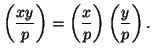
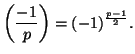
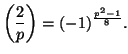
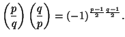
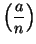

Du symbole de Legendre aux tests de probabilité probabilistes
 Cette page contient un peu plus de maths que d'autres...
Cette page contient un peu plus de maths que d'autres...
Symbole de Legendre
L'équation y2=x, x fixé, n'est pas toujours résoluble dans Z/nZ. Un peu comme pour le discriminant sur R, on a besoin de savoir si cette équation a des solutions ou non!
Définition : On dit que x est résidu quadratique modulo n s'il existe y tel que y2=x mod n. Si p est premier impair, on définit le symbole de Legendre :

Pour calculer, le symbole de Legendre, on dispose des 4 propriétés suivantes :
- 
- 
- 
-  si p et q sont deux premiers impairs distincts.
Exemple : x2=219 admet-elle une solution modulo 383? On calcule le symbole de Legendre :
Symbole de Jacobi
On étend la définition du symbole de Legendre en posant :
Test de primalité de Solovay-Strassen
On choisit un entier premier avec n. On calcule a(n-1)/2 mod n, puis le symbole de Jacobi . L'entier n satisfait au test si :
Consulter aussi